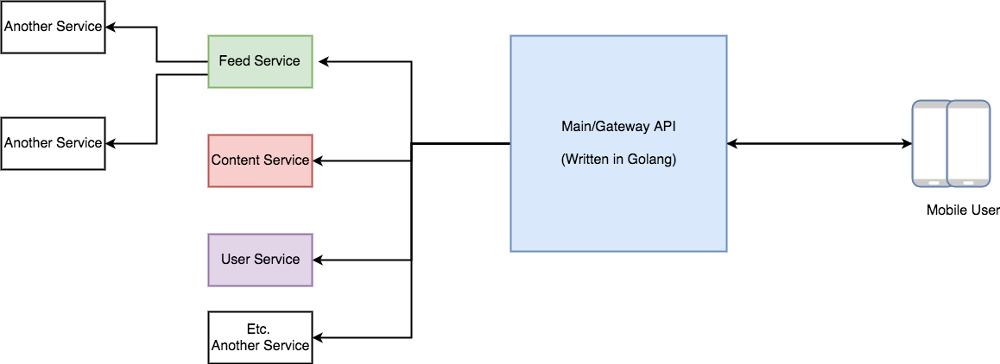
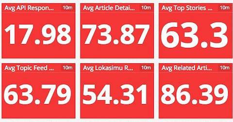
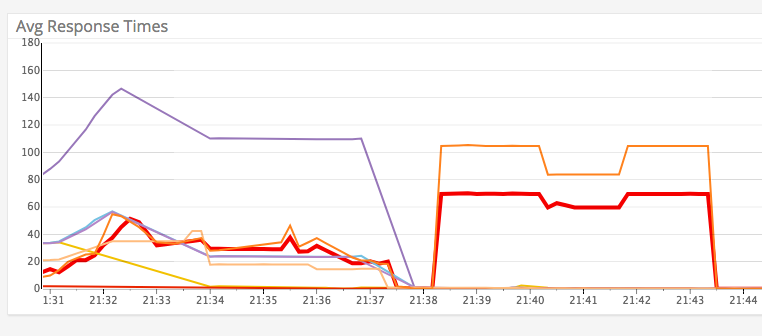

[번역] Go API에서 메모리 누수 예방하기
Feb 18, 2018 00:00 · 3544 words · 8 minute read
Avoiding Memory Leak in Golang API를 번역한 글입니다.
여러분은 Go API를 프로덕션 환경에 배포하기 전에 먼저 이 글을 읽어야합니다. 이 글은 Kurio에서의 실제 경험에 기반한 것이며, 우리가 올바른 방식으로 개발하고 있지 않아서 모든 배포를 위해 얼마나 고군분투 했었는지에 대한 경험담입니다.
몇 주 전, 우리는 Kurio의 메인 서비스에서 발생한 이상하고 감지도 되지 않는 버그들을 고치고 있었다. 우리는 다양한 방법으로 디버깅과 버그 수정을 시도했었다. 서비스는 몇 주 동안 프로덕션 환경에서 동작해왔기 때문에 비즈니스 로직에서 발생한 버그는 아니었다. 그러나 오토 스케일링으로 서비스를 항상 살렸기 때문에 이는 잘 동작하는 것처럼 보였다.
나중에 우리팀은 이 문제가 코드의 문제임을 발견했고 우리가 제대로 하고 있지 않았음을 알아냈다.
아키텍처
참고로, 우리는 아키텍처에 마이크로서비스 패턴을 사용하고있다. 우리는 유저(모바일 및 웹)에게 API를 제공하는 메인 API라고 하는 하나의 게이트웨이 API를 가지고있는데, 이는 API 게이트웨이와 유사한 역할을 하기 때문에 단순히 유저로부터 받은 요청을 처리한 다음 요청에 맞는 필요한 서비스를 호출하고 유저에게 응답을 반환한다. 이 메인 API는 100% Go로 작성되었다. Go를 선택한 이유는 다른 얘기이므로 여기서 그 이유를 설명하진 않겠다.
우리의 시스템을 그림으로 그려보면 다음과 같다.

문제점
우리는 한동안 항상 다운되고 모바일앱에 긴 응답 시간을 보내며 가끔은 접속 장애까지 일으키는 메인 API로 인해 많은 고생을 했다. API 대시보드 모니터는 어느새 빨간색으로 바뀌었다. 솔직히 말하면 API 대시보드 모니터가 빨간색으로 바뀐다는건 위험한 일이었고 이는 엔지니어에게 스트레스와 패닉을 안겨주었다.
또 다른 문제는 CPU와 메모리 사용량이 점점 더 높아지고 있었다는 것이다. 이런일이 발생하면 우리는 서비스를 수동으로 다시 시작하고 재실행될 때까지 기다렸다.


이 버그는 버그에 대한 그 어떠한 특별한 정보도 로깅하고 있지 않았기 때문에 매우 난처했다. 응답시간이 매우 길어지고 CPU와 메모리 사용량이 증가했다. 정말 악몽 같았다.
1단계 : http.Client 커스터마이징
서비스를 개발하면서 배운것중 하나는 디폴트 설정은 신뢰할 수 없다는 것이다.
우리는 http 패키지의 디폴트 설정을 사용하는 대신 직접 커스터마이징한 http.Client를 사용했다.
client := http.Client{} // default
우리는 몇가지 필요한 설정을 추가했다. 커넥션 재사용을 위해 전송 (Transport) 정보를 설정하고 재사용 가능한 커넥션에 대한 최대 유휴 (Idle) 시간을 조절했다.
keepAliveTimeout:= 600 * time.Second
timeout:= 2 * time.Second
defaultTransport := &http.Transport{
Dial: (&net.Dialer{
KeepAlive: keepAliveTimeout,
}).Dial,
MaxIdleConns: 100,
MaxIdleConnsPerHost: 100,
}
client:= &http.Client{
Transport: defaultTransport,
Timeout: timeout,
}
이 설정을 통해 다른 서비스를 호출하는데 소요되는 최대 시간을 줄일 수 있었다.
2단계 : 닫히지 않은 응답 바디에서의 메모리 누수 방지
이 단계에서 우리가 배운 것은 커넥션 풀을 다른 서비스에서 재사용하기 위해선 반드시 응답 바디를 모두 읽고 종료 해야한다는 것이다.
메인 API는 단지 다른 서비스들을 호출하고 있었기 때문에, 우리는 치명적인 실수를 저질렀다. 메인 API는 http.Client에서 사용가능한 커넥션을 재사용한다고 가정하고 있기 때문에 어떤 일이 생기면 설령 필요없다고 하더라도 반드시 응답 바디를 읽어야한다. 또한 반드시 응답 바디를 닫아야한다. 이 두 가지는 우리 서버에서 메모리 누수를 방지하는데 도움이 되었다.
우리는 코드에서 응답 바디를 닫는다는걸 잊고 있었다. 그리고 이는 후에 우리의 프로덕션에 큰 재앙을 일으켰다.
해결책은 응답 바디는 반드시 닫고, 반환되는 데이터가 필요없을지라도 응답 바디를 읽는 것이었다.
req, err := http.NewRequest("GET", "http://example.com?q=one", nil)
if err != nil {
return err
}
resp, err := client.Do(req)
//=================================================
// 응답 바디를 닫음
//=================================================
if resp != nil {
defer resp.Body.Close() // 반드시 닫아야함
}
if err != nil {
return err
}
//=================================================
// HTTP 커넥션을 재사용할때 메모리 누수를 피하기 위해선 데이터가 필요없더라도 응답 바디를 읽어야함
//=================================================
_, err = io.Copy(ioutil.Discard, resp.Body) // 응답 바디를 읽음. (데이터가 필요 없으므로 devnull에 write)
if err != nil {
return err
}
우리는 이 훌륭한 글을 읽고 위 문제를 해결했다.
1단계와 2단계 및 오토 스케일링의 도움으로 이 버그를 줄일 수 있었으며, 이는 작년 (2017) 이후 3개월간은 다시 발생하지 않았다.
3단계 : Go 채널의 타임아웃 제어
잘 동작하다가 몇 개월 후, 버그가 재발하였다. 2018년 1월 첫 주, 메인 API가 호출하는 서비스중 하나인 콘텐츠 서비스가 다운되었는데, 어떤 이유로 접속 불능 상태가 되었다.
따라서 콘텐츠 서비스가 다운되면서 메인 API는 다시 중단되었다. API 대시보드는 다시 빨간색으로 바뀌고, API 응답 시간이 길어지면서 느려졌다. 오토 스케일링을 사용중임에도 불구하고 CPU와 메모리 사용량이 매우 높아졌다.
또 다시 우리는 문제의 근원을 찾기 시작했다. 콘텐츠 서비스를 재실행하니 다시 잘 동작하였다.
우리는 왜 이런일이 발생했는지 의아해했다. 생각해보니, 우리는 http.Client에 타임아웃 기한을 설정했기 때문에 이런 일은 절대 발생하지 않을 것이다.
그런 다음, 코드에서 잠재적인 문제를 찾다가 몇가지 위험한 코드를 발견했다.
빠른 이해를 위해 바로 코드를 살펴보자.
아래 함수는 예시 함수이긴하나, 우리가 마주한 패턴과 유사한 코드이다.
// 고치기전 코드
type sampleChannel struct{
Data *Sample
Err error
}
func (u *usecase) GetSample(id int64, someparam string, anotherParam string) ([]*Sample, error) {
chanSample := make(chan sampleChannel, 3)
wg := sync.WaitGroup{}
wg.Add(1)
go func() {
defer wg.Done()
chanSample <- u.getDataFromGoogle(id, anotherParam) // 함수의 예시
}()
wg.Add(1)
go func() {
defer wg.Done()
chanSample <- u.getDataFromFacebook(id, anotherParam)
}()
wg.Add(1)
go func() {
defer wg.Done()
chanSample <- u.getDataFromTwitter(id,anotherParam)
}()
wg.Wait()
close(chanSample)
result := make([]*Sample, 0)
for sampleItem := range chanSample {
if sampleItem.Error != nil {
logrus.Error(sampleItem.Err)
}
if sampleItem.Data == nil {
continue
}
result = append(result, sampleItem.Data)
}
return result
}
위 코드를 보면 아무 문제가 없어보인다. 그러나 이 함수는 우리의 메인 API에서 가장 많이 접근하는 함수이며, 가장 무거운 호출이다. 왜냐하면 이 함수는 큰 작업을 처리하는 3개의 API를 호출하기 때문이다.
이를 개선하기 위해선 채널에서 타임아웃을 사용하는 새로운 접근법을 도입해야한다. 위와 같은 형태의 코드에서는 WaitGroup이 모든 프로세스가 끝날 때까지 대기하고 있기 때문에 모든 응답을 처리하고 반환하기 위해서는 모든 API 호출이 끝날때까지 기다려야한다.
이는 우리가 저지른 큰 실수중 하나이다. 이 코드는 하나의 서비스가 죽었을 때 큰 문제를 일으킬 수 있다. 죽은 서비스가 복구될때까지 계속 기다릴 것이기 때문이다. 물론 초당 5K개의 호출이 들어오면 이는 재앙이 된다.
첫 시도 해결책
우리는 타임아웃을 추가하여 코드를 수정했다. 따라서 유저는 오랫동안 기다리지 않아도 되며 대신 Internal Server Error를 받게될 것이다.
func (u *usecase) GetSample(id int64, someparam string, anotherParam string) ([]*Sample, error) {
chanSample := make(chan sampleChannel, 3)
defer close(chanSample)
go func() {
chanSample <- u.getDataFromGoogle(id, anotherParam) // 함수의 예시
}()
go func() {
chanSample <- u.getDataFromFacebook(id, anotherParam)
}()
go func() {
chanSample <- u.getDataFromTwitter(id,anotherParam)
}()
result := make([]*feed.Feed, 0)
timeout := time.After(time.Second * 2)
for loop := 0; loop < 3; loop++ {
select {
case sampleItem := <-chanSample:
if sampleItem.Err != nil {
logrus.Error(sampleItem.Err)
continue
}
if feedItem.Data == nil {
continue
}
result = append(result,sampleItem.Data)
case <-timeout:
err := fmt.Errorf("Timeout to get sample id: %d. ", id)
result = make([]*sample, 0)
return result, err
}
}
return result, nil;
}
4단계 : 컨텍스트를 활용한 타임아웃 제어
3단계까지 시도 했음에도, 우리의 문제는 여전히 완벽하게 해결되지는 않았다. 우리의 메인 API는 여전히 높은 CPU와 메모리를 점유하고 있었다.
이는 유저에게 이미 Internal Server Error를 반환하고 있음에도 불구하고 고루틴이 여전히 살아있었기 때문이다. 우리가 원하던건 응답이 반환되면 백그라운드에서 돌아가고있는 고루틴 및 API 호출을 포함한 모든 리소스가 예외없이 지워지는 것이다.
나중에 이 글을 읽은 뒤, 우리는 Go에서 알지 못했던 흥미로운 특징을 발견했다. 바로 컨텍스트 (Context)를 활용한 고루틴의 캔슬레이션 (Cancellation)이다.
타임아웃을 위해 time.After를 사용하는 대신 context.Context를 사용하였다. 이 새로운 접근법으로 우리의 서비스는 보다 더 안정적이게 되었다.
그 다음 관련 함수에 컨텍스트를 추가하여 코드 구조를 다시 변경하였다.
// 컨텍스트를 사용한 최종 수정 코드
func (u *usecase) GetSample(c context.Context, id int64, someparam string, anotherParam string) ([]*Sample, error) {
if c== nil {
c= context.Background()
}
ctx, cancel := context.WithTimeout(c, time.Second * 2)
defer cancel()
chanSample := make(chan sampleChannel, 3)
defer close(chanSample)
go func() {
chanSample <- u.getDataFromGoogle(ctx, id, anotherParam) // 함수의 예시
}()
go func() {
chanSample <- u.getDataFromFacebook(ctx, id, anotherParam)
}()
go func() {
chanSample <- u.getDataFromTwitter(ctx, id,anotherParam)
}()
result := make([]*feed.Feed, 0)
for loop := 0; loop < 3; loop++ {
select {
case sampleItem := <-chanSample:
if sampleItem.Err != nil {
continue
}
if feedItem.Data == nil {
continue
}
result = append(result,sampleItem.Data)
// ============================================================
// 일관성 없는 데이터를 방지하기 위해 컨텍스트가 타임아웃을 초과하는 경우
// 유저에게 빈 배열과 에러 메시지를 보낸다
// ============================================================
case <-ctx.Done(): // 컨텍스트가 타임아웃을 초과했다는 알림 시그널을 받음
err := fmt.Errorf("Timeout to get sample id: %d. ", id)
result = make([]*sample, 0)
return result, err
}
}
return result, nil;
}
우리는 코드에서 모든 고루틴 호출에 컨텍스트를 사용한다. 이는 메모리를 해제하고 고루틴 호출을 취소하는데 도움이 된다.
추가적으로, 보다 더 통제 가능하고 신뢰성 있는 서비스를 위해 HTTP 요청에 컨텍스트를 전달한다.
func ( u *usecase) getDataFromFacebook(ctx context.Context, id int64, param string) sampleChanel{
req,err := http.NewRequest("GET", "https://facebook.com", nil)
if err != nil {
return sampleChannel{
Err: err,
}
}
// ============================================================
// 요청에 컨텍스트를 전달한다
// 이 기능은 Go 1.7부터 사용할 수 있다
// ============================================================
if ctx != nil {
req = req.WithContext(ctx) // HTTP 호출 요청에 컨텍스트를 사용하고있다.
}
resp, err:= u.httpClient.Do(req)
if err != nil {
return sampleChannel{
Err: err,
}
}
body,err:= ioutils.ReadAll(resp.Body)
if err!= nil {
return sampleChannel{
Err:err,
}
}
sample:= new(Sample)
err:= json.Unmarshall(body,&sample)
if err != nil {
return sampleChannle{
Err:err,
}
}
return sampleChannel{
Err:nil,
Data:sample,
}
}
이 모든 설정과 타임아웃 제어로 인해, 우리의 시스템은 보다 더 안전하고 통제 가능한 시스템이 되었다.
배운점
- 프로덕션 환경에서는 절대 디폴트 옵션을 사용하지 말자. 디폴트 옵션을 사용하지 않으며 큰 프로젝트를 만들고 있다면 절대 디폴트 옵션을 사용하지 말라.
- 많이 읽고, 많이 시도해보고, 많이 실패해보며, 많은 얻을 것. 우리는 이 경험으로부터 많은걸 배울 수 있었고, 이 경험은 오직 실제 사례와 실제 사용자가 있는 환경에서만 얻을 수 있다. 나는 이 버그를 수정했던 팀의 일원으로서 아주 기쁘다.